Slambook Questions
| Birthday: | March 27, 2007 |
| Favorite Color: | Purple and pink |
| Favorite Weekday: | Saturday |
| Favorite Food: | Fried chicken and Fried eggs |
| Hobbies and how you got into it: | Journaling, Guitar, Coding. |
| Biggest fear: | Getting hit by a truck. |
| Current problem/s: | Phone addiction, staying and waking up late, lack of free time. |
| Biggest Accomplishments: | Getting a dost scholarship and not having to pay tuition for college. |
| Zodiac sign and if you believe in astrology: | Aries, nae. |
| Favorite Constellation: | Orion. |
 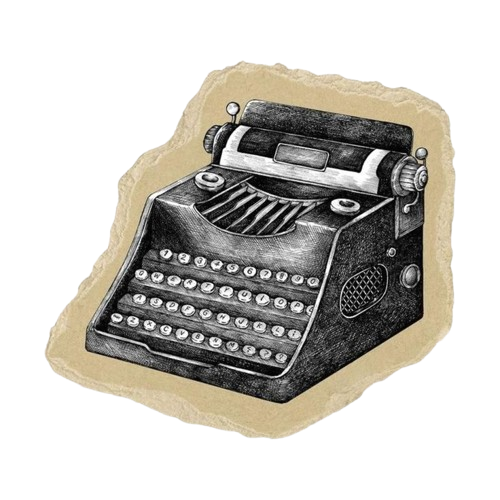
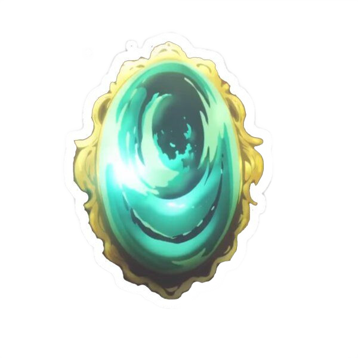
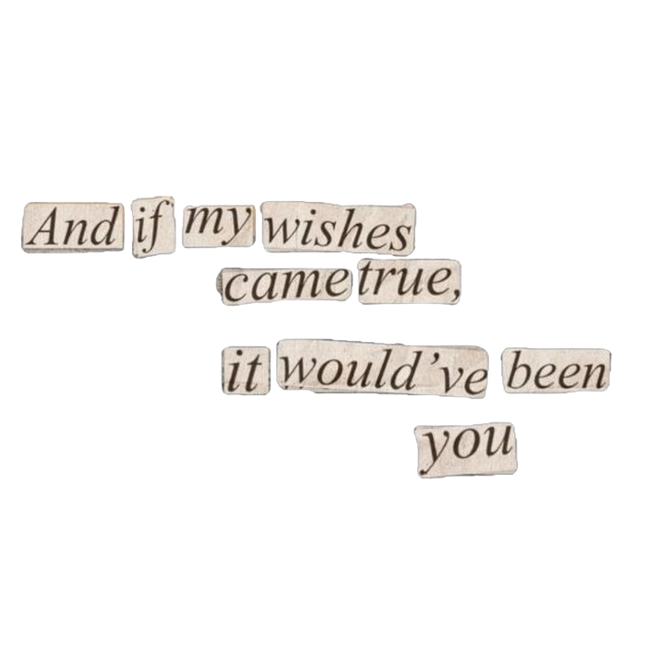
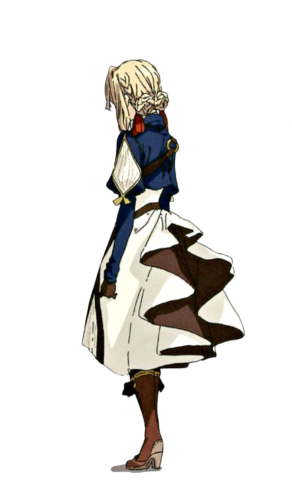
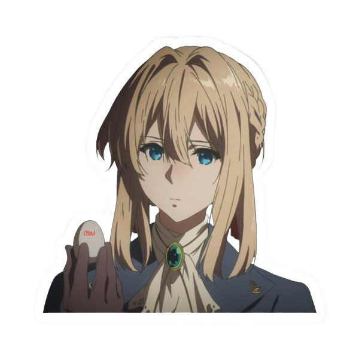
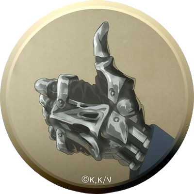
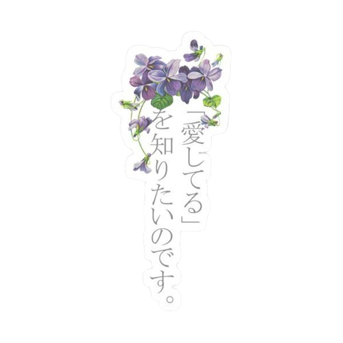
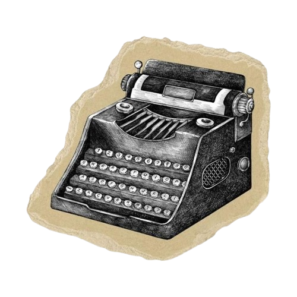
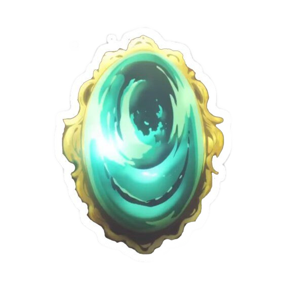
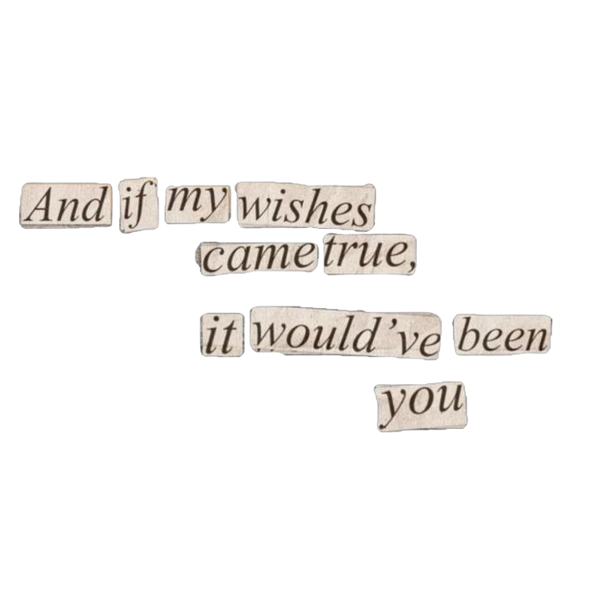
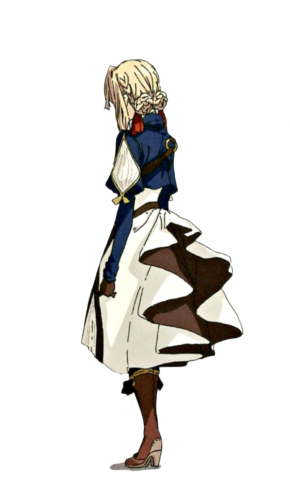
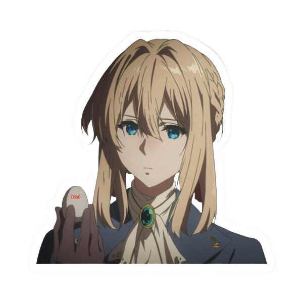
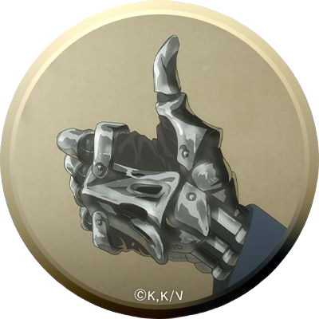
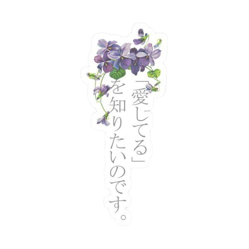